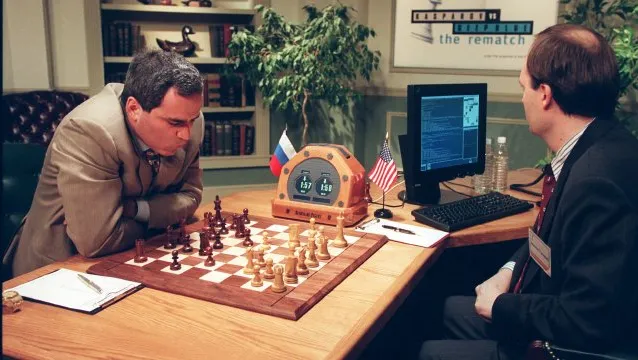
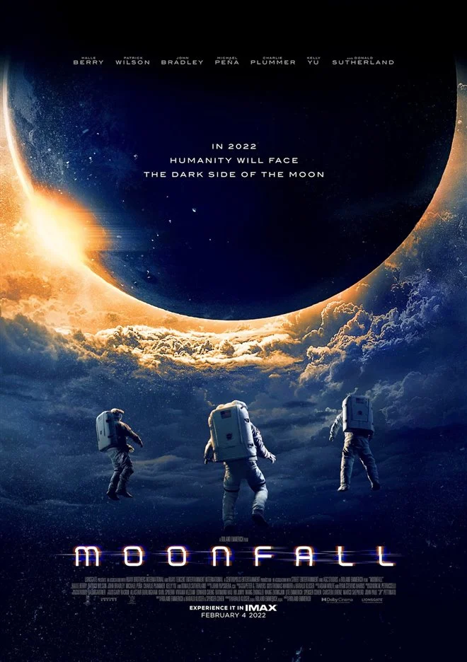

My fear of artificial intelligence.
Something that I have a problem with is AI, although at the moment AI is not developed to the extent where we should be concerned and not dangerous at all. Nevertheless, I can't help think about :
What would happen if we lost control of the AIs and they developed a conscience and then ended up waging war on us?
Garry Kasparov face versus Deep Blue
I've been asking myself this question ever since I saw the 1997 video of Garry Kasparov, world chess champion from 1985 to 2000, against Deep Blue, an artificial intelligence designed by IBM, which ended in Deep Blue's victory.
Photo of Garry Kasparov against Deep Blue
What shocked me in the video was the fact that a human widely considered to be the greatest chess player of all time was defeated by a machine and this was only in 1997. I had seen this video when I was in high school and I told myself that since 1997, machines have evolved enormously and will evolve even more in the next few years and will be able to do things even more unthinkable and incredible than beating humans at chess.
From admiration to fear.
After watching the video, I started to get a little more interested in AI and at first, I found it fascinating, how it worked and how it was developed, then little by little I couldn't help but imagine scenarios that turned into dramas, then I quickly stopped making scenarios and getting interested in AI, because I didn't see it the same way anymore.
Then there was a movie that came out in early 2022 called MOONFALL
movie poster of Moonfall
I'm not going to go into too much detail so as not to try and spoil, but this movie is about a human civilization that was very advanced technologically and had set up AIs to serve them and help them with their daily tasks, but this AI ended up developing a conscience and killing all the humans.
As I walked out of the theater, I thought to myself that there is a chance that this could happen, but with the arrival of the metaverse and Elon Musk's desire to release humanoid robots I can't get this idea out of my head and say to myself, are we really ready to move into this new world?